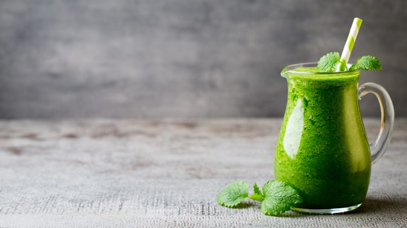

Sweet Spinach Hemp Smoothie
~ raw, vegan, gluten-free, nut-free ~
This morning marked day 1 of my 30-day smoothie / 100% raw adventure. Eating 100% raw is not new to me. A few years ago I was 100% for a complete year and in between then and now I have been eating high raw.
I am using the following 30 days to really saturate my body with a variety of nutrients and healthy fats. I am trying to keep my fruits at a minimum in these smoothies, hence the intense green color this morning. :) I added 2 handfuls of ice to it which bumped it up from 32 oz to 36 oz.

Hemp Seeds
Hemp seeds are a great resource for Omega fatty acids, which offer many benefits. They help in weight loss because they produce long-term appetite satisfaction and they also help the cardiovascular, immune, reproductive, and central nervous systems on a minute to minute basis every day. Other benefits of hemp seed come from the fiber content (which is important for the digestive system) and is an adequate source of calcium and iron.
Ceylon Cinnamon
Studies have shown that just 1/2 teaspoon of cinnamon per day can lower LDL cholesterol and is beneficial for those with hypothyroidism. Several studies suggest that cinnamon may have a regulatory effect on blood sugar, making it especially beneficial for people with Type 2 diabetes. Cinnamon is so amazing! To read more about it click (here).
Smoothie Tips
Blending fruits and vegetables together breaks down the cells of plants and improves digestibility. BUT even with that, be sure to chew your smoothies. The chewing process starts the release of the saliva in your mouth. The mixture of saliva and your food is where digestion begins. This is a very healthy habit to get into. It may feel strange at first, but soon it will become an automatic response.
 Ingredients:
Ingredients:
- 2 cups water
- 6 cups spinach
- 1 oz kale (1 leaf approx.)
- 3 Tbsp hemp seeds
- 5 oz banana, frozen (1 medium)
- 3 Tbsp fresh lemon juice
- 1 Tbsp vanilla
- 1 tsp ground Ceylon cinnamon
- 1 tsp NuStevia Powder
- Pinch Himalayan pink salt
Preparation:
- Add the water, spinach, and kale to the blender carafe. Blend until the greens are completely broken down.
- The first thing to add to your blender is the liquid. This will the greens move more freely when blending.
- Add the hemp seeds, frozen banana, lemon juice, vanilla, cinnamon, sweetener, and salt. Blend until smooth.
- I always recommend frozen bananas over fresh. Make a habit out of storing overripe, peeled bananas in the freezer for future smoothies.
- A dash of a high-quality salt will increase the minerals and improve the taste of your smoothie.
- A good green smoothie should be perfectly smooth.
- Optional – Add ice
- Always add the ice last. Otherwise, you may over blend the ice, and it will make your smoothie watery rather than frosty.
- I usually only add ice if my fruit wasn’t frozen.
- Enjoy right away.
© AmieSue.com